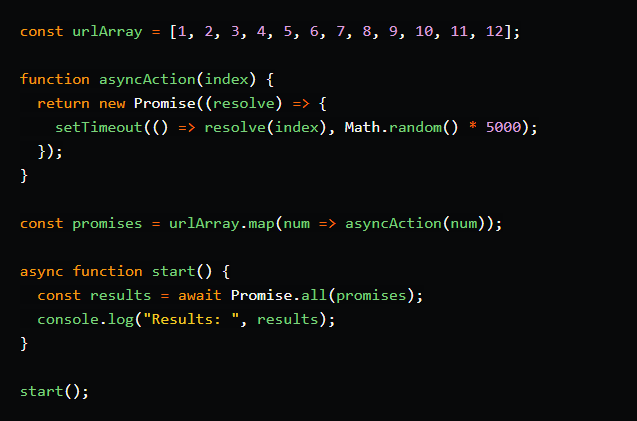

Why Promise.all() is not always a suitable solution.
If you’re a frontend developer engaged in building highly interactive user interfaces, you’ve most likely got React in your toolkit. While working on your React-powered creations, you should be careful to do things in tune with the React best practices. This will help to keep your code better organized.
Background
Here at Stillio, it's paramount that we take care of the code we write. We process thousands of images and people rely on us for making sure their screenshots get delivered.
Recently, we found something that might be interesting about Promise.all().
What is Promise.all?
The .all method on the Promise object is a neat way to process a list of asynchronous actions in order and receive an Array of results. e.g.
{kind=link}
A handy feature of Promise.all is that it will give back the results in the order that the promise array was given, let's look at a more robust example:

{kind=link}
Description
Above we have a fake urlArray variable. Assume that this is actual urls that we want to fetch. Since fetching is an async event we simulate that with the function asyncAction.
All asyncAction actually does is return a promise which resolves at a random interval between 0 and 5000ms. This is to simulate changes in network latency, not all requests respond in the exact same time.
To create an Array of Promises, we map the urlArray and return a new Array with the Promises after calling asyncAction. These aren't resolved yet, so we use Promise.all() in start() to give us an Array of results and since the function just returns the number:
console.log("Results: ", results); // Results: [1, 2, 3, 4, 5, 6, 7, 8, 9, 10, 11, 12]
The results demonstrate that even though each request took a considerable different amount of time to complete, the Promise.all() method made sure that the results were returned in the correct order, hooray there's reliability! Or is there...
Where Promise.all() gets interesting
Let's look at the above example again, but this time we change some things up. In the fake request let's update the resolve function to this:
{kind=link}
We've added a date component to the result of the Promise. This is actually something that we required in our code base. We had to process multiple URLs in an Array asynchronously and give it a timestamp that was congruent to the order of the Array. Sounds like the perfect job for Promise.all().
Let's run the code again with the timestamp component included, here's the result:
Results: [
'1: 2021-04-15T07:55:28.315Z',
'2: 2021-04-15T07:55:27.586Z',
'3: 2021-04-15T07:55:30.063Z',
'4: 2021-04-15T07:55:30.707Z',
'5: 2021-04-15T07:55:28.549Z',
'6: 2021-04-15T07:55:30.284Z',
'7: 2021-04-15T07:55:27.231Z',
'8: 2021-04-15T07:55:29.844Z',
'9: 2021-04-15T07:55:26.287Z',
'10: 2021-04-15T07:55:27.308Z',
'11: 2021-04-15T07:55:28.798Z',
'12: 2021-04-15T07:55:30.978Z'
]
As you can see, Item 10 was created ~1s before item 1 was created. Even though the method maintained the order of the Promise resolutions, there was this effect that timestamps were dependent on these random intervals.
This makes sense if you think about it, because fundamentally the issue already arose in the loop - when generating the promises. The loop doesn't wait for the previous promise to arrive for the next one to be made - it's still just a Promise.
The alternative approach
{kind=link}
The code above is very similar, except we've removed promise.all() and replaced it with a simple for of loop. On each iteration, we HAVE to wait for the previous result, because of await. The outcome is:
[
'0: 2021-04-15T08:12:13.026Z',
'1: 2021-04-15T08:12:17.042Z',
'2: 2021-04-15T08:12:21.314Z',
'3: 2021-04-15T08:12:21.600Z',
'4: 2021-04-15T08:12:22.984Z',
'5: 2021-04-15T08:12:27.061Z',
'6: 2021-04-15T08:12:28.771Z',
'7: 2021-04-15T08:12:30.432Z',
'8: 2021-04-15T08:12:31.530Z',
'9: 2021-04-15T08:12:35.691Z',
'10: 2021-04-15T08:12:40.394Z',
'11: 2021-04-15T08:12:41.410Z'
]
The results are ordered and so is the time component. This was what was actually expected.
Conclusion
Promise.all() is a super handy tool but because of it's abstraction, it's easy to overlook something like a time component. Keep in mind, the first example ran much quicker than the second, since the timers didn't need to complete before the next result was fired.
So in general, if there is an element of time. e.g. a dateCreated property on the results of a list of Promises or asynchronous actions, consider using a loop instead of Promise.all().